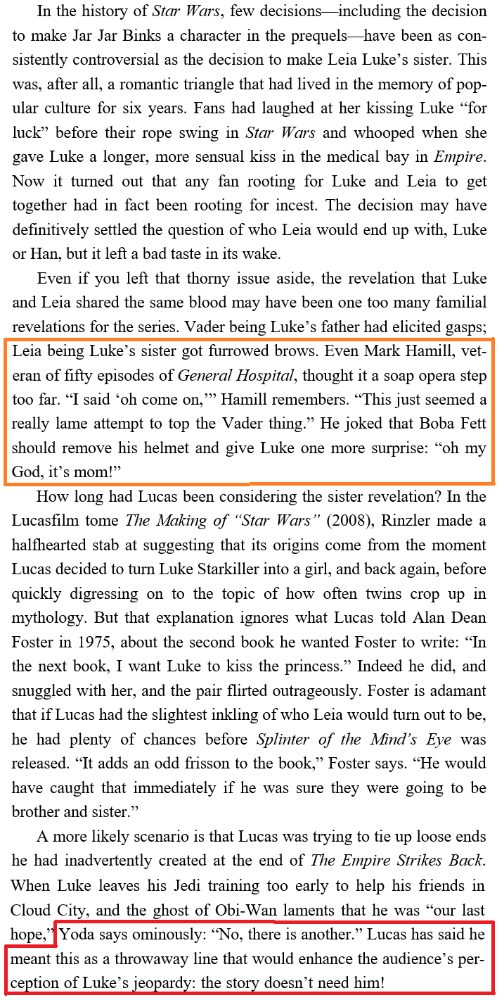
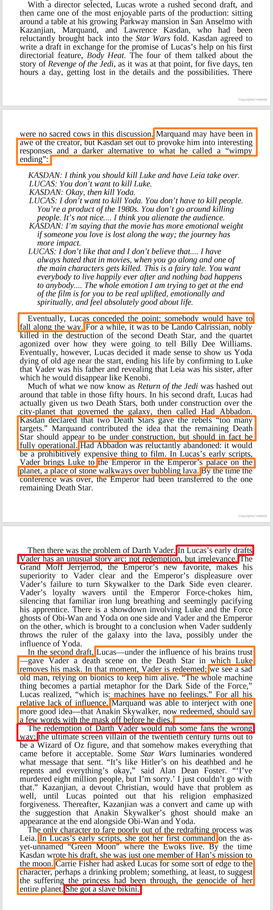
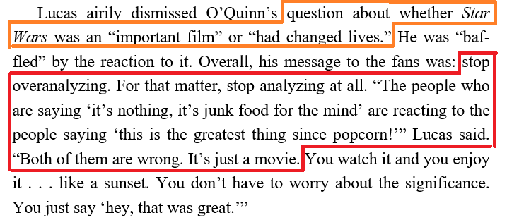
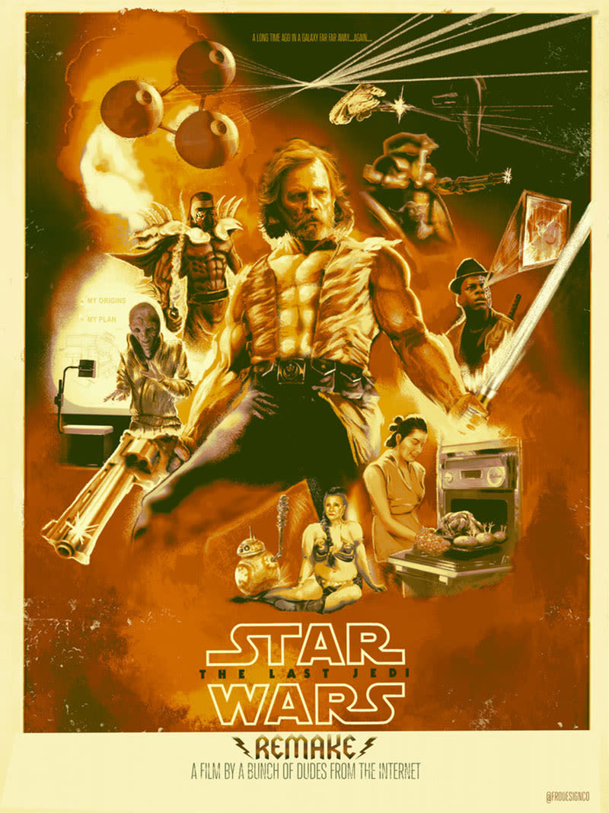

Is Rian Johnson different George Lucas? This is what "Synchronic Design" suggests on Twitter
What if Rian Johnson was not so different George Lucas after all? Especially 1970's George Lucas who imagined a much darker end to Return of the Jedi: "the Empire ultimatly defeated but Han died, Luke walked off alone, and Leia was left to govern a Rebellion in tatters"?
What if George Lucas thinks Star Wars is just film that should not be overanalyzed?
What if George Lucas thought the Star Wars story did not need Luke Skywalker anymore?
In a book called "How Star Wars Conquered the Universe: The Past, Present, and Future of a Multibillion Dollar Franchise, written by Chris Taylor, the full text can be found and it contains much more than what was posted on Twitter by "Synchronic Design", as well as more detail that highlight that at some point George Lucas had very different and bittersweet ideas for Return of the Jedi.
The discussion extract on Twitter is not an interview between George Lucas and Lawrence Kasdan, but a retelling of a meeting between Howard Kazanjian, Richard Marquand, Lawrence Kasdan, and George Lucas, at Lucas's house in San Anselmo, discussing the second draft of The Return of the Jedi.
It is clear that not all the great ideas that made it to the screen was thought off by George Lucas. In the days of The Empire Strikes Back and Return of the Jedi there was a more collaborative process.
It is also clear why suddenly George Lucas became reluctant to kill main characters. Toys sales. The money generated by toys royalties was his path to becoming truly independant from hollywood.
There is a great interview of Gary Kurtz were he describes that bittersweet ending to Return of the Jedi, and how George Lucas changed his point of view about films, that the audience just wants a roller-coaster rides rather than character driven stories, that since then his new catch phrase is "It's good enough".
George Lucas also thought that the Star Wars story did not need Luke Skywalker.
Not all great, on screen, Return of the Jedi moments came from George Lucas. It is interesting to note that one set piece idea made it in Rogue One.
One thing worth noting is that Return of the Jedi had its controversy: Darth Vader's redemption and Leia being revealed as Luke's sister.
Another thing worth noting is that Lucas had orignally written Leia in command of the Endor mission. Also, Carrie Fisher asked for more character depth, but being 100% in charge George Lucas decided to give her slave gold bikini.
Ultimatly, George Lucas thinks Star Wars is jut a film and does not need to be overanalyzed.
There you have it, it seems Rian Johnson resurected some old ideas that George Lucas initally had when he was a different kind of film maker, when he actually was a film maker and story teller.
Yes, there are a few things I would like to be different in The Last Jedi (no throwing of lightsaber over the shoulder, no Canto Bight horses, force users not being this crazy powerful, and Luke making it to episode 9) but the controversies are no different form the days of The Empire Strikes Back and Return of the Jedi. It is just that everyone's displeased opinion can be instantaniously spread on a global scale.
People forgot about the old controversies, and people have forgotten how bittersweet the end of The Empire Strikes Back was at the time, the rebels were on the run, Han was in carbonite, Lando was that guy you did not know you could trust when he left with Chewie, and Luke had lost to Vader and lost a hand.
Today, one thing people do not realize is that the Skywalkers are in fact doomed to always be tempted by the Dark Side of the Force. Anakin succombed to it, Luke overcame it at first when defeating Vader and resisting the Emperor but peeking into Ben Solo's mind it was too much, the Dark Side of the Force that was always present finally took over for a split second. That scared Luke and he thought that going to the original temple would allow him to gain a permanent control over the temptation of the Dark Side. Once he realized that it would not work he made the sacrifice to cut himself and stop using the Force all together.
Source:Fro Design Company
{kind=link}
{kind=link}
{kind=link}
{kind=link}